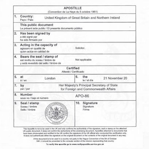
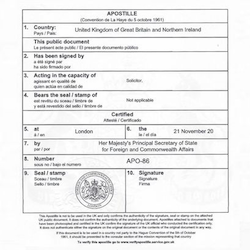

Over mij

Mijn naam is Natalya Novak. Ik ben voltijds beëdigd vertaler-tolk1 Nederlands–Russisch. Dankzij mijn diploma bestuurswetenschappen heb ik een goede kennis van de correcte juridische terminologie. Bovendien heb ik het certificaat van gerechtsvertaler en -tolk2, waardoor documenten hun juridische waarde behouden. Door het beroepsgeheim blijft de inhoud van uw documenten beschermd.
Enkele weetjes over mijn achtergrond:
- ik ben Russisch van geboorte
- ik studeer, werk en woon in België sinds 1999
- ik ben perfect 2-talig
- ik volg regelmatig diverse studies en bijscholingen om mee te blijven met de actuele terminologie
Ik werk vlot met moderne media (Skype, WhatsApp, Viber...); tolken en vertalingen kunnen dus ook op afstand. Ik ben makkelijk bereikbaar (contactpagina), voor dringende opdrachten ook 's nachts op het nummer 0032 123 45 67 89.
Voordelen
Communicatie, betrouwbaarheid en transparantie zijn belangrijk. Daarom bied ik deze vier garanties:
- documenten voor 18u binnen, volgende dag vertaald
- beschikbaar 24/24, 7/7
- teksten kunnen per mail of per post aangeleverd worden
- vaste prijs: 40€ per uur
Wat zeggen anderen?
Dmitry Sokolov:
"Спасибо за хороший и быстрый перевод! Всем советую!"
Let op!
Voor vertalingen van documenten die in het buitenland geldig moeten zijn, is soms een apostillestempel vereist. Het wordt geplaatst in het land dat het document uitgeeft.

 

Mylene Wouters: